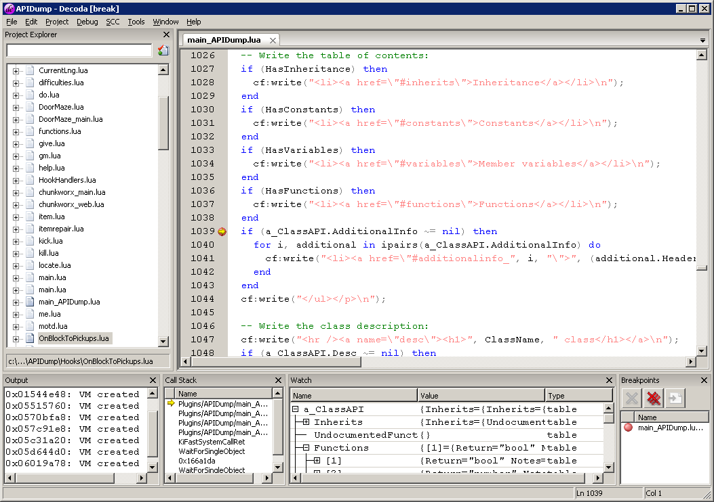
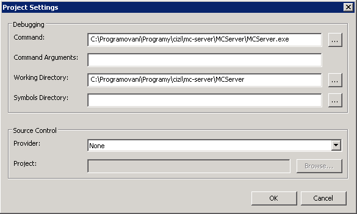

Setting up the Decoda IDE
This article will explain how to set up Decoda, an IDE for writing Lua code, so that you can develop Cuberite plugins with the comfort of an IDE.
About Decoda
To quickly introduce Decoda, it is an IDE for writing Lua code. It has the basic features expected of an IDE - you can group files into project, you can edit multiple files in a tabbed editor, the code is syntax-highlighted. Code completion, symbol browsing, and more. It also features a Lua debugger that allows you to debug your Lua code within any application that embeds the Lua runtime or uses Lua as a dynamic-link library (DLL). Although it is written using the multiplatform WxWidgets toolkit, it hasn't yet been ported to any platform other than 32-bit Windows. This unfortunately means that Linux users will not be able to use it. It can be used on 64-bit Windows, but the debugger only works for 32-bit programs.
Here's a screenshot of a default Decoda window with the debugger stepping through the code (scaled down):

As you can see, you can set breakpoints in the code, inspect variables' values, view both the Lua and native (C++) call-stacks. Decoda also breaks program execution when a faulty Lua script is executed, providing a detailed error message and pointing you directly to the faulting code. It is even possible to attach a C++ debugger to a process that is being debugged by Decoda, this way you can trap both C++ and Lua errors.
Decoda is open-source, the sources are on GitHub: https://github.com/unknownworlds/decoda. You can download a compiled binary from the creators' site, http://unknownworlds.com/decoda/.
Project management
To begin using Decoda, you need to create a project, or load an existing one. Decoda projects have a .deproj extension, and are simply a list of Lua files that are to be opened. You can create a project through menu Project -> New Project. Save your project first, so that Decoda knows what relative paths to use for the files. Then either add existing Lua files or create new one, through menu Project -> Add Add New File / Add Existing File.
Next you need to set up the executable that Decoda will run when debugging your files. Select menu Project -> Settings. A new dialog will open:

In the debugging section, fill in the full path to Cuberite.exe, or click the triple-dot button to browse for the file. Note that the Working directory will be automatically filled in for you with the folder where the executable is (until the last backslash). This is how it's supposed to work, don't change it; if it for some reason doesn't update, copy and paste the folder name from the Command edit box. All done, you can close this dialog now.
Debugging
You are now ready to debug your code. Before doing that, though, don't forget to save your project file. If you haven't done so already, enable your plugin in the settings.ini file. If you want the program to break at a certain line, it is best to set the breakpoint before starting the program. Set the cursor on the line and hit F9 (or use menu Debug -> Toggle Breakpoint) to toggle a breakpoint on that line. Finally, hit F5, or select menu Debug -> Start to launch Cuberite under the debugger. The Cuberite window comes up and loads your plugin. If Decoda displays the Project Settings dialog instead, you haven't set up the executable to run, see the Project management section for instructions.
At this point you will see that Decoda starts adding new items to your project. All the files for all plugins are added temporarily. Don't worry, they are only temporary, they will be removed again once the debugging session finishes. You can tell the temporary files from the regular files by their icon, it's faded out. Decoda handles all the files that Cuberite loads, so you can actually debug any of those faded files, too.
If there's an error in the code, the Decoda window will flash and a dialog box will come up, describing the error and taking you to the line where it occured. Note that the execution is paused in the thread executing the plugin, so until you select Debug -> Continue from the menu (F5), Cuberite won't be fully running. You can fix the error and issue a "reload" command in Cuberite console to reload the plugin code anew (Cuberite doesn't detect changes in plugin code automatically).
If the execution hits a breakpoint, the Decoda window will flash and a yellow arrow is displayed next to the line. You can step through the code using F10 and F11, just like in MSVS. You can also use the Watch window to inspect variable values, or simply hover your mouse over a variable to display its value in the tooltip.
Limitations
So far everything seems wonderful. Unfortunately, it doesn't always go as easy. There are several limits to what Decoda can do:
- When the program encounters a logical bug (using a nil value, calling a non-existent function etc.), Decoda will break, but usually the Watch window and the tooltips are showing nonsense values. You shouldn't trust them in such a case, if you kep running into such a problem regularly, put console logging functions (LOG) in the code to print out any info you need prior to the failure.
- Sometimes breakpoints just don't work. This is especially true if there are multiple plugins that have files of the same name. Breakpoints will never work after changing the code and reloading the plugin in Cuberite; you need to stop the server and start again to reenable breakpoints.
- Most weirdly, sometimes Decoda reports an error, but instead of opening the current version of the file, opens up another window with old contents of the file. Watch for this, because you could overwrite your new code if you saved this file over your newer file. Fortunately enough, Decoda will always ask you for a filename before saving such a file.
- Decoda stores the project in two files. The .deproj file has the file list, and should be put into version control systems. The .deuser file has the settings (debugged application etc.) and is per-user specific. This file shouldn't go to version control systems, because each user may have different paths for the debuggee.
- Unfortunately for us Windows users, the Decoda project file uses Unix-lineends (CR only). This makes it problematic when checking the file into a version control system, since those usually expect windows (CRLF) lineends; I personally convert the lineends each time I edit the project file using TED Notepad.